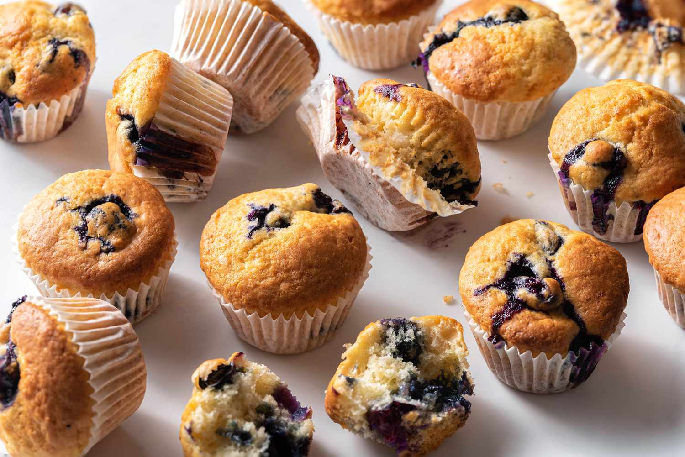

Best Ever Muffins

Ingredients
- 2 cups all purpose flour
- 3 teaspoons baking powder
- 1/2 teaspoon salt
- 3/4 cup white sugar
- 1 egg
- 1 cup milk
- 1/4 cup vegatable oil
Steps
- Preheat the oven to 400 degrees F. Grease a 12-cup muffin tin or line cups with paper liners
- Stir flour, baking powder, salt, and sugar together in a large bowl; make a well in the center
- Beat egg with a fork in a small bowl or 2-cup measuring cup; whisk in milk and oil. Pour egg mixture all at once into flour mixture; mix quickly and lightly with a fork until just moistened. The batter will be lumpy. Spoon batter into the prepared muffin cups, filling each 3/4 full
- Bake in the preheated oven until tops spring back when lightly pressed, about 25 minutes